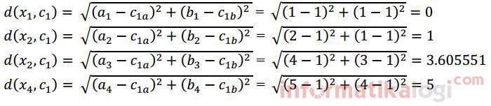

K-Mean Clustering
Pendahuluan

Clustering merupakan suatu metode untuk mencari dan mengelompokkan data yang memiliki kemiripan karakteristik (similarity) antara satu data dengan data yang lain. Clustering merupakan salah satu metode data mining yang bersifat tanpa arahan (unsupervised). Yang dimaksud metode unsupervised yaitu metode ini diterapkan tanpa adanya latihan (training) dan guru (teacher) serta tidak memerlukan target output. Ada dua jenis data clustering yang sering dipergunakan dalam proses pengelompokan data yaitu hierarchical (hirarki) data clustering dan non-hierarchical (non hirarki) data clustering.
K-Means merupakan salah satu metode data clustering non hirarki yang berusaha mempartisi data yang ada ke dalam bentuk satu atau lebih cluster/kelompok. Metode ini mempartisi data ke dalam cluster/kelompok sehingga data yang memiliki karakteristik yang sama dikelompokkan ke dalam satu cluster yang sama dan data yang mempunyai karakteristik yang berbeda dikelompokkan ke dalam kelompok yang lain. Adapun tujuan dari data clustering ini adalah untuk meminimalisasikan objective function yang diset dalam proses clustering, yang pada umumnya berusaha meminimalisasikan variasi di dalam suatu cluster dan memaksimalisasikan variasi antar cluster.
Kelebihan K-Means Clustering
- Menggunakan prinsip yang sederhana, dapat dijelaskan dalam non-statistik
- Mudah untuk diimplementasikan dan dijalankan.
- Waktu yang dibutuhkan untuk menjalankan nya relatif cepat
- Sangat fleksibel, dapat dengan mudah diadaptasi.
- Sangat umum digunakan
Kekurangan K-Means Clustering
- dalam non-statistik Karena menggunakan k buah acak, tidak di jamin untuk menemukan kumpulan cluster yang optimal
- dapat terjadinya curse of dimensionality, apabila jarak antara cluster yang satu dengan yang lain memiliki banyak dimesi.
- Tidak optimal digunakan untuk data yang jumlahnya terlalu banyak sampai bermiliyar.
Algoritma K-Means Clustering
Langkah-langkah algortima K-Means Clustering :
- Tentukan jumlah cluster
- Alokasikan data ke dalam cluster secara random
- Hitung centroid/rata-rata dari data yang ada di masing-masing cluster
- Alokasikan masing-masing data ke centroid/rata-rata terdekat
- Kembali ke Step 3, apabila masih ada data yang berpindah cluster atau apabila perubahan nilai centroid, ada yang di atas nilai threshold yang ditentukan atau apabila perubahan nilai pada objective function yang digunakan di atas nilai threshold yang ditentukan
Contoh Perhitungan K-Means
Ditentukan banyaknya cluster yang dibentuk dua (k=2). Banyaknya cluster harus lebih kecil dari pada banyaknya data (k<n).
Contoh Dataset K-means
Inisialisasi centroid dataset pada tabel dataset diatas adalah C1 = {1 , 1} dan C2 = {2 , 1}. Inisialiasasi centroid dapat ditentukan secara manual ataupun random.
Untuk pengulangan berikutnya (pengulangan ke-1 sampai selesai), centroid baru dihitung dengan menghitung nilai rata-rata data pada setiap cluster. Jika centroid baru berbeda dengan centroid sebelumnya, maka proses dilanjutkan ke langkah berikutnya. Namun jika centroid yang baru dihitung sama dengan centroid sebelumnya, maka proses clustering selesai.
Rumus yang digunaka untuk menghitung distance space atau jarak data dengan centroid menggunakan Euclidiean Distance.

Persamaan Euclidean Distance
Pengulangan ke-1
Jarak data dengan Centroid C1 adalah:

Pengulangan ke-1 C1 K-means
Jarak data dengan Centroid C2 adalah:
Pengulangan ke-1 C2 K-means
Untuk seterusnya, hitung jarak pada setiap baris data, dan hasilnya seperti pada tabel dibawah.
Hasil Perhitungan Pengulangan ke-1
Kelompokan data sesuai dengan cluster-nya, yaitu data yang memiliki jarak terpendek. Contoh; karena d(x1,c1) < d(x1,c2) maka x1 masuk ke dalam cluster 1. Pada tabel diatas, data n=1 masuk ke dalam cluster 1 karena dc1 < dc2, sedangkan n=2,3,4 masuk ke dalam cluster 2 karena dc2 < dc1.
Pengelompokan Data pada Pengulangan ke-1
Setelah mendapatkan label cluster untuk masing-masing data n=1,2,3,4 maka dicari nilai rata-ratanya dengan menjumlahkan seluruh anggota masing-masing cluster dan dibagi jumlah anggotanya.
Nilai Rata-Rata Centroid pada Pengulangan ke-1
Pengulangan ke-2
Pengelompokan Data pada Pengulangan ke-2
Nilai Rata-Rata Centroid pada Pengulangan ke-2
Pengulangan ke-3
Pengelompokan Data pada Pengulangan ke-3

Nilai Rata-Rata Centroid pada Pengulangan ke-3
Karena centroid tidak mengalami perubahan (sama dengan centroid sebelumnya) maka proses clustering selesai.
Implementasi
hal yang diperlukan dalam pengimplementasian
- python 3.6
library yang harus di install
- numpy library
pip install numpy
- Pandas library
pip install pandas
- matplotlib library
pip install matplotlib
Step 1,import Library
import Library setelah menginstall library yang diperlukan kita dapat mengimport library kedalam koding
#import libraries
import numpy as np
import matplotlib.pyplot as plt
import pandas as pd
import random as rd
from collections import defaultdict
import matplotlib.cm as cm
Step 2,import Data
dataset=pd.read_csv('crredit.csv')
dataset.describe()

data yang digunakan pendapatan dan rating_pengeluaran
X = dataset.iloc[:, [3, 4]].values
sekerang X adalah bentuk dua matriks (200,2)
Step 3,Jumlah iterasi
Kita perlu mencoba banyak kemungkinan untuk menemukan jumlah iterasi optimal yang diperlukan untuk konvergensi. Tidak perlu memilih angka yang sangat besar karena katakanlah pada iterasi ke-100, jika centroid tiba di lokasi sebenarnya atau lokasi terbaik, bahkan setelah melakukan 1000 iterasi tambahan, algoritma akan memberikan hasil yang sama. Jadi untuk kenyamanan mari kita mulai dengan memilih jumlah iterasi sebanyak 100
m=X.shape[0] #number of training examples
n=X.shape[1] #number of features. Here n=2
n_iter=100
Step 4,Menentukan Jumlah Kluster
memilih jumlah cluster K. kita ambil 5 sebagai K (jumlah cluster)
K=5 # number of clusters
Step 5,Memilih centroid awal secara random
memilih centroid awal secara random
Centroids=np.array([]).reshape(n,0)
Centroid adalah matriks dimensi K, di mana setiap kolom akan menjadi centroid untuk satu kluster.
for i in range(K):
rand=rd.randint(0,m-1)
Centroids=np.c_[Centroids,X[rand]]
Step 6,Menghitung EuclidianDistance
Step 6.a Untuk setiap data pada baris hitung jarak euclidian dari centroid dan mengelompokan sesuai cluster berdasarkan jarak minimal dari centroid
Output={}
hitung jarak euclidian dari setiap titik data ke semua centroid dan mengelompokkannya dalam matriks m X K. Jadi setiap baris dalam matriks EuclidianDistance akan memiliki jarak titik data tertentu dari semua centroid. Selanjutnya, kita akan menemukan jarak minimum dan menyimpan indeks kolom dalam vektor C.
EuclidianDistance=np.array([]).reshape(m,0)
for k in range(K):
tempDist=np.sum((X-Centroids[:,k])**2,axis=1)
EuclidianDistance=np.c_[EuclidianDistance,tempDist]
C=np.argmin(EuclidianDistance,axis=1)+1
Step 6.b Kita perlu mengelompokkan kembali poin data berdasarkan indeks cluster C dan menyimpannya dalam variabel Output dan juga menghitung rata-rata cluster yang telah dikelompokkan dan menetapkannya sebagai centroid baru.
Y={}
for k in range(K):
Y[k+1]=np.array([]).reshape(2,0)
for i in range(m):
Y[C[i]]=np.c_[Y[C[i]],X[i]]
for k in range(K):
Y[k+1]=Y[k+1].T
for k in range(K):
Centroids[:,k]=np.mean(Y[k+1],axis=0)
ulangi langkah 6 sampai konvergensi tercapai. Dengan kata lain, kita mengulang n_iter dan ulangi langkah 6.a dan 6.b seperti yang ditunjukkan sampai tidak ada perubahan data dalam setiap cluster:
for i in range(n_iter):
#step 2.a
EuclidianDistance=np.array([]).reshape(m,0)
for k in range(K):
tempDist=np.sum((X-Centroids[:,k])**2,axis=1)
EuclidianDistance=np.c_[EuclidianDistance,tempDist]
C=np.argmin(EuclidianDistance,axis=1)+1
#step 2.b
Y={}
for k in range(K):
Y[k+1]=np.array([]).reshape(2,0)
for i in range(m):
Y[C[i]]=np.c_[Y[C[i]],X[i]]
for k in range(K):
Y[k+1]=Y[k+1].T
for k in range(K):
Centroids[:,k]=np.mean(Y[k+1],axis=0)
Output=Y
Step 7,Visualisasi Data
memvisualisasikan algoritma dan perbedaan data asli dan data setelah diclusterkan. Pertama menampilkan data sebelum di clusterkan dengan menambah codingan seperti berikut
plt.scatter(X[:,0],X[:,1],c='black',label='unclustered data')
plt.xlabel('Income')
plt.ylabel('Number of transactions')
plt.legend()
plt.title('Plot of data points')
plt.show()
Data setelah di Clusterkan
Note : Dataset dan Program bisa didownload dan dilihat dalam DISINI
Referensi
- https://informatikalogi.com/algoritma-k-means-clustering/
- https://id.wikipedia.org/wiki/K-means
- https://medium.com/machine-learning-algorithms-from-scratch/k-means-clustering-from-scratch-in-python-1675d38eee42